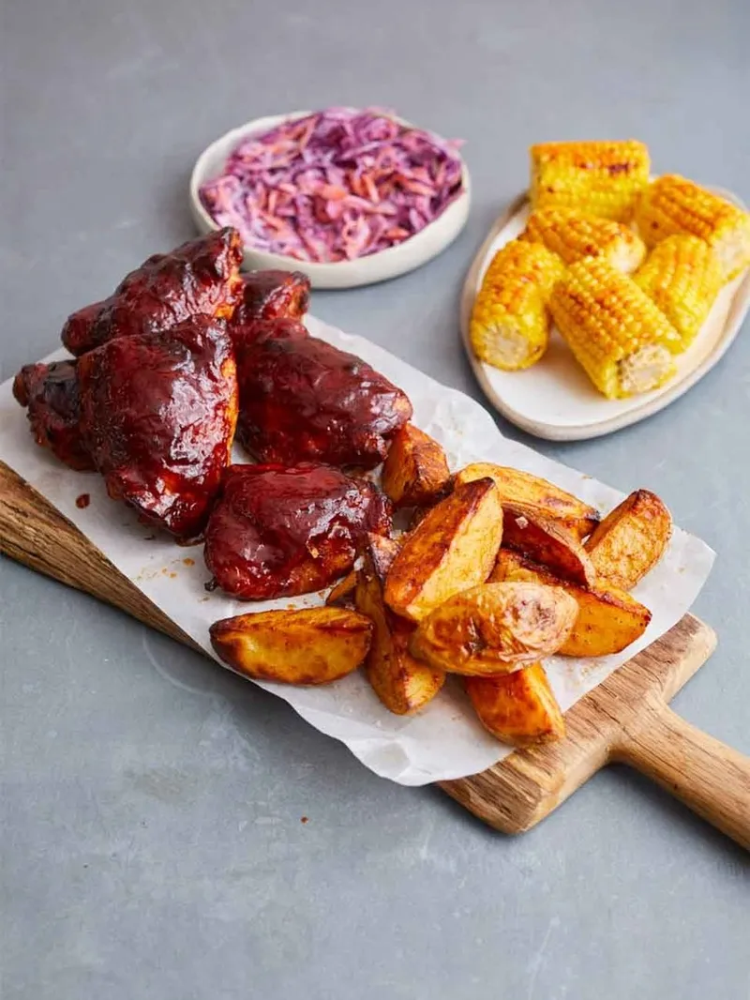

BBQ Chicken Recipe

BBQ Chicken
CORN ON THE COB & QUICK SLAW
“Maximise oven space and use the energy to its full potential with this flavour-packed fakeaway. Here,
I’m filling up the oven with sticky, glazed BBQ chicken,
paprika-spiced wedges and golden corn on the cob. By making the most of store-cupboard and freezer ingredients,
this is not only healthier than your average takeaway, it’s much cheaper, too! ”
Ingridients
- 75 ml tomato ketchup
- 2 tablespoons runny honey
- 1 tablespoon Worcestershire sauce
- 1 teaspoon smoked paprika
- White vinegar
- 6 chicken thighs , bone in, skin on
- 1.2 kg potatoes
- olive oil
- 750 g frozen corn on the cob
- 250 g red cabbage
- 150 g carrots
- 1 onion
- 100 g natural yoghurt
Steps/Method
- Preheat the oven to 190°C/375°F/gas 5. Place the ketchup, honey, Worcestershire sauce, most of the smoked paprika and 1 tablespoon of red wine vinegar in a snug-fitting roasting tray and mix together. Add the chicken and toss to coat. At this point, you can either leave the tray covered in the fridge to marinate, or season with a pinch of sea salt and black pepper and set aside while you prep the potatoes.
- Scrub and quarter the potatoes lengthways and place in another large roasting tray. Drizzle in 2 tablespoons of olive oil, season and sprinkle over a pinch of smoked paprika, tossing until coated. Arrange the potatoes skin-side down in one even layer. Place the potato tray on the middle shelf of the oven and the chicken tray on the top shelf to roast for 20 minutes.
- Once the time’s up, carefully spoon off any fat from the chicken and add to the potatoes, tossing to coat. Baste the chicken in the remaining juices, scraping up any sticky bits from the bottom of the tray. Return both trays to the oven to roast for a further 25 minutes or until the chicken pulls away easily from the bone, placing the frozen corn straight onto the bars of the bottom shelf to cook alongside.
- Meanwhile, trim the cabbage and carrots, and peel the onion. Coarsely grate it all on a box grater. Place in a bowl with ½ a tablespoon of red wine vinegar, 1 tablespoon of oil and the yoghurt. Mix together and season to perfection.
- Serve the chicken and potatoes alongside the slaw, rolling the corn in all the lovely chicken tray juices before plating up.